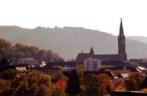

|
home | help | email |


Fourth
International
Workshop
on
Seizure
Prediction
background
|
 |
|
Specific Aims The overall objective of this effort is to convene an ongoing series of international meetings on seizure prediction, seizure dynamics and seizure control. The workshops provide a regular, structured forum for the exchange of ideas, dissemination of findings, and evaluation of metrics to gauge progress. The workshops also form the basis for development of future collaborative projects. The first meeting on seizure prediction was held in Bonn, Germany in April 2002, a second meeting was held in Bethesda, USA in April 2006, and the third meeting was held in Freiburg, Germany in Sept 2007. A meeting scheduled for Paris in 2004 was not convened. Consensus on Meetings, Topics and Guidelines Following the Bethesda meeting, investigators from 11 institutes (composed of 7 USA based institutes) and SEIN (Netherlands), Salpetriere-Paris (France), University of Bonn (Germany) and Freiburg University (Germany), were polled to gauge interest in future meetings. There was broad consensus on key questions. First, there was consensus on the need for regular meetings, with some arguing that regular meetings could pace development in the indicated fields. Suggestions on the recurrence of meetings ranged between every 12 to every 24 months, with a majority of investigators considering meeting recurrence every 18 months to be adequate given the present rate of developments. Some considered it would be valuable to meet more often when warranted by developments. Where possible, the meetings should be full 2-3 day standalone meetings, and where possible the meetings should alternate between USA and Europe. Second, there was consensus the topics to be addressed should encompass seizure predication, seizure generation and seizure control. Third, a set of general guidelines was drawn up to help achieve the goal of regular meetings. These organizing principles are the following: (1) share work towards the stated goal; (2) rotate leadership; (3) incorporate checks and redundancy so that a meeting is not missed; (4) work towards obtaining NIH support for regular meetings; (5) look to engage other investigators to: (a) better represent identified topics, (b) achieve a broader representation of institutes, (c) better general guidelines for the involvement of women, ethnic and racial minorities, handicapped, and junior investigators. Funding The three previous meetings have been funded by the American Epilepsy Society (AES), the German Section of the International League against Epilepsy, the German Section of the International Federation of Clinical Neurophysiology, and the NIH (NINDS). Adjunct funding was received from companies for IWSP3. Fourth International Seizure Prediction Meeting, June 4-7, 2009 The Fourth International Workshop on Seizure Prediction (IWSP4) was co-chaired by Ivan Osorio, Mark Frei, Susan Arthurs and Hitten Zaveri (the Organizing Committee, OC) and hosted by the Alliance for Epilepsy Research. The workshop was held at the Hyatt Regency Crown Center Hotel in Kansas City, Missouri, June 4-7, 2009. The OC designed a questionnaire and polled attendees of IWSP3 in fall 2007. The feedback from the attendees of IWSP3 was used to help plan IWSP4. Summaries of the first three workshops The First International Collaborative Workshop on Seizure Prediction: Summary and data description Klaus Lehnertz, PhD and Brian Litt, MD The First International Collaborative Workshop on Seizure Prediction was held at the Department of Epileptology, University of Bonn, in Bonn, Germany on April 24-28, 2002. Organized by the Universities of Pennsylvania and Bonn, and funded by grants from the American Epilepsy Society, the German Section of the International League against Epilepsy, and the German Section of the International Federation of Clinical Neurophysiology, the workshop was attended by 51 researchers from 16 centers in seven countries. There were four major goals for the workshop: (1) to host a one-day didactic session on the science of seizure prediction, with lectures by leaders in the field; (2) to assess the current state of the field by applying current methods used to predict seizures to a shared set of continuous intracranial EEG data and discussing the strengths and weaknesses of each approach; (3) to establish a consensus on minimal data requirements, a common nomenclature, and objective methods for comparing system performance across platforms and laboratories for seizure prediction research; and most importantly (4) to establish a multi-laboratory, international working group dedicated to understanding seizure generation and making on-line, prospective seizure prediction a reality. Following the didactic course, each participating group presented their results, after applying their seizure prediction methods to five common data sets agreed upon in advance and distributed before the meeting. What follows is a description of the shared data set used for analysis, a summary of the major discussion points from the workshop, and points of consensus among the group. The brief discussion serves as a common introduction to the research papers that follow in this issue, and the description of the shared data is referenced in each of these papers. Participants in the workshop are listed at the end of the Conclusions section, in alphabetical order. PMID: 15721063 [PubMed - indexed for MEDLINE] Clin Neurophysiol. 2005 Mar;116(3):493-505. Epub 2005 Jan 5. http://www.ncbi.nlm.nih.gov/pubmed/15721063
Second International Workshop on Seizure Prediction Leonidas Iasemidis, PhD, Chris Sackellares, MD, Randall Stewart, PhD, Joseph Pancrazio, PhD Over 80 representatives from academia, industry, government and philanthropic organizations sponsoring epilepsy research gathered for a four-day workshop on seizure generation, prediction and therapy in April 2006. The meeting broadened considerably the expertise of individuals working in the field, introducing researchers from economics, mathematics, physics, engineering, biophysics and other related disciplines who had not previously been involved in research in this area. Discussions were lively, and a number of key issues limiting progress in the field were identified. These included focusing on tangible, answerable questions, applications and methods that can produce useful results, if not complete solutions to the problem. New, very promising data were presented on broad-band EEG and closed-loop control applied to understanding seizure generation and antiepileptic therapy. Old disagreements regarding controversial methods were presented and dealt with openly. There was consensus that as of the date of the meeting, no solution to prospective seizure prediction, as the problem has been formulated in the past, was in hand. There was tremendous enthusiasm for continued collaborative work in this field, and the promise of new approaches and methods to come up with practical diagnostic and therapeutic solutions for patients. The meeting adjourned following agreement by all participants that these workshops should continue every 1.5 years, alternating between the United States and Europe. All participants felt that the meeting was a great success, and thanked our hosts at NINDS for their support.
Third International Workshop on Epileptic Seizure Prediction Andreas Schulze-Bonhage, Jens Timmer and Björn Schelter
 The 3rd International Workshop on Seizure Prediction in Epilepsy was held from September 29th to October 2nd, 2007 in Freiburg, Germany. There were 142 participants. The workshop was not dedicated to Seizure Prediction alone but to all research areas that are related to seizure prediction. Thus, the topics ranged from modeling single cell behavior via modeling complex networks to ready to apply seizure prediction techniques and the performance evaluation thereof. Talks and posters providing an overview of the state of the art in their fields were complemented by presentations of more recent results. Experts in seizure detection and seizure control also contributed to the workshop. The 3rd Workshop was partially funded through a conference grant from NINDS (1R13NS060623-01). |
|
Copyright 2009 - Fourth International Workshop on Seizure Prediction - All Rights Reserved |
|